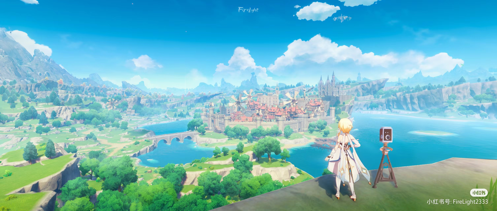
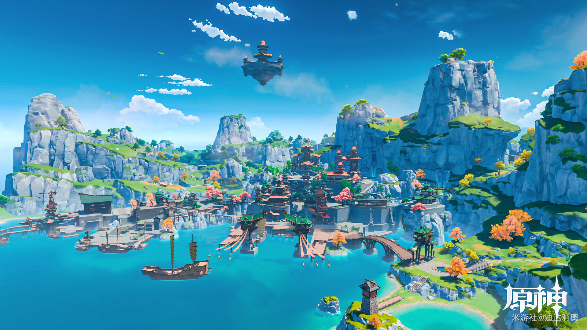

| 蒙德 |  |
《原神》中的蒙德是一个具有深厚文化和历史的国家 。 具体如下： 历史原型丰富。蒙德的原型是以德国和荷兰为代表的中世纪西欧国家，其历史原型中包含了真正的欧洲国家的味道，尤其是德国。 文化独特。蒙德的风神崇拜自由，不去统治，只有在蒙德由旧贵族统治的腐败时期进行协助4。蒙德的文化以音乐和诗歌为主，拥有丰富的历史文化，拥有悠久的传统和底蕴。 建筑风格独特。蒙德的红瓦木骨架的小屋充满了欧式色彩，而且蒙德特别喜欢喝酒，酒馆文化无处不在1。 地理环境优美。蒙德四周被果酒湖包围，有著名的崔斯特山和翡玲峰，城市内有中央广场，广场上还有一个骑着风筝的少女雕像3。 |
|
| 璃月 |  |
璃月是提瓦特大陆七国中的一国，位于大陆东方的富饶国度。 璃月，其商港璃月港是全提瓦特大陆最繁华且吞吐量最大的港口，灵感来源为凤凰古城和悬空寺。璃月的"黄金屋"是全提瓦特大陆唯一的铸币厂，生产全大陆的统一货币"摩拉"。璃月人民所信奉的神明是"尘世七执政"中的"契约"之神、岩之神摩拉克斯，故璃月有"契约之城"的称号1。 |
|
| 须弥 | |
须弥位于提瓦特大陆中西部。它是一个草木的国度，分为雨林和沙漠两大部分。 雨林。雨林位于须弥的西部和北部，被称为大赤沙海和苍漠囿土。雨林中有丰富的植被和动物，是许多神奇植物的家园，也是旅者的避难所。 沙漠。沙漠位于须弥的西部和北部，被称为大赤沙海和苍漠囿土。 沙漠中有独特的地理景观，如巨大的“圣树”和“教令院1 2”。 须弥的文化和历史非常丰富，拥有悠久的历史和丰富的文化遗产2。须弥的现任草神为“摩诃善法大吉祥智慧主”布耶尔1。须弥的居民信仰【草】元素，现任元素神灵为小吉祥草王 。 须弥的特色建筑“须弥座”起源于印度，是安置佛、菩萨像的台座。须弥座的形式大略的说，是一段台基，其上下有几道水平的线道。须弥座一般用作等级形制较高的建筑物，如皇家宫殿、园林、陵寝和庙宇内的殿宇、寺庙、铜兽、影壁、塔、功德碑、华表、牌坊等等。 |
|
| 枫丹 | |
枫丹，大陆水系的源流之地，提瓦特大陆七国中的一国，被称为“正义的国度”，位于提瓦特大陆的中部。信奉的神明为掌管“正义”的水之神芙宁娜。 背景介绍枫丹是提瓦特大陆中的一个国家，取名源自于法国的枫丹白露（Fontainebleau）市镇，由水之神芙卡洛斯统治。枫丹人对艺术、时尚、正义有着极致追求，拥有提瓦特七国中最发达的轻工业技术，提瓦特大陆知名报刊《蒸汽鸟报》总部也坐落于枫丹境内。枫丹是位于提瓦特中部的地上之海。循着水淳淳流来的方向而行，越过原野、深林与沙海，抵达的将是大陆水系的源流之地。在瀑布顶端、高原之上的海都深处，从未听闻的故事、早已遗忘的传说如同沉入水底的失落国度般渴求着游人。枫丹地区拥有广阔的水域，潜入水中，不仅能体验到被多样的生物环绕，似乎还有许多宝物和不为人知的故事。作为水之国度，枫丹的海底风光可谓壮丽奇。 |
|
| 稻妻 | |
稻妻位于提瓦特大陆远东的群岛。 稻妻是由“尘世七执政”中的雷神巴尔泽布所统治的国家，雷之神信奉“永恒”。地区背景稻妻，永恒的国度，日语中即闪电之意，是位于提瓦特大陆远东的封闭群岛。稻妻外海被雷霆骤雨所包围，越过无尽的雷暴，踏上红枫与绯樱眷顾的诸岛，在环绕的砂堤、高耸的断崖与幽秘的山林之中，见证御建鸣神主尊大御所大人所追寻的永恒。稻妻的风土人情与其他国度差异甚远，与蒙德和璃月不同，稻妻远在海上，由许多岛屿组成，大型岛屿周边又零散分布着一些小岛，岛屿之间互相往来也多依靠船只。 |
|